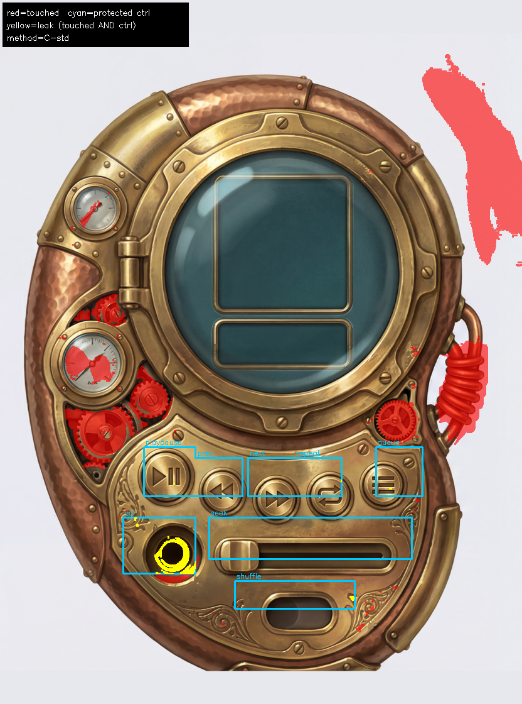
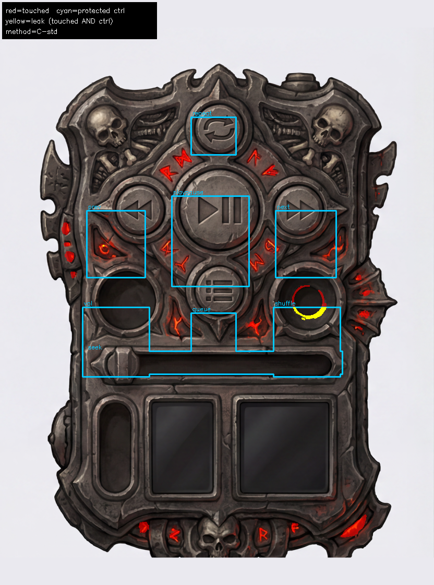
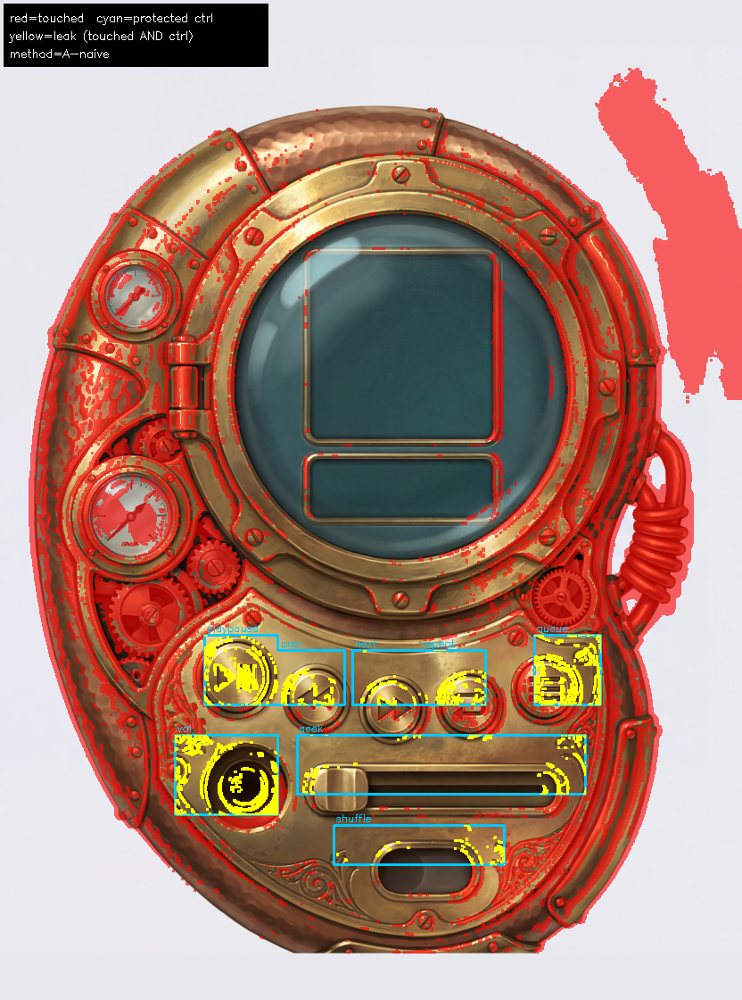
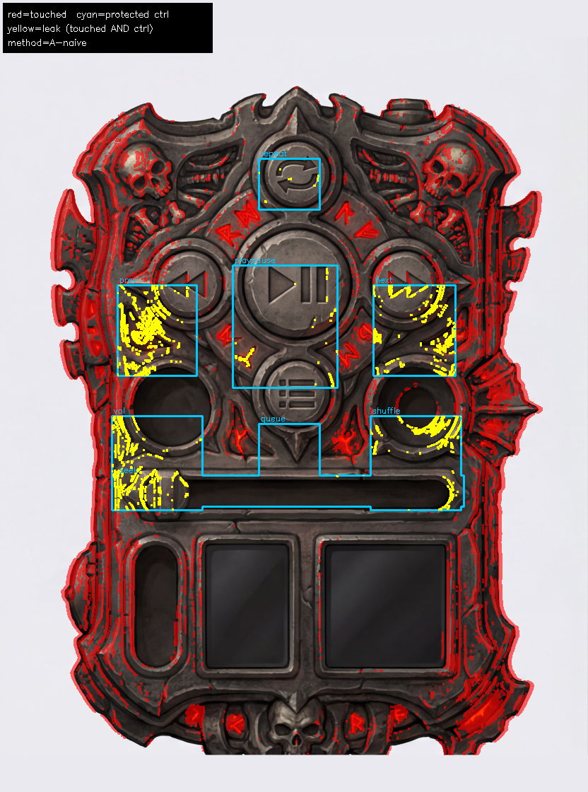
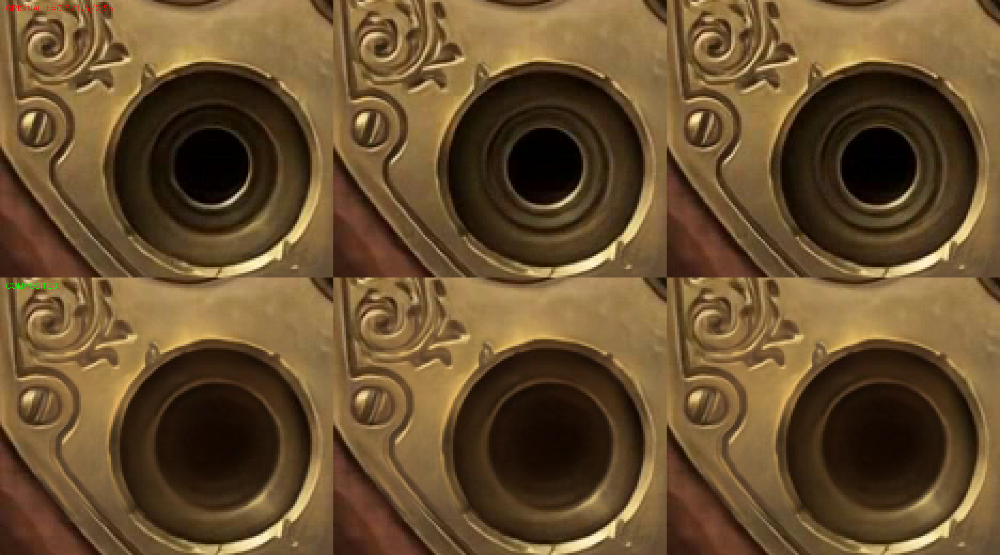

docs/experiments/2026-07-09-ambient-video-loops.mdfal-ai/ltx-2.3-22b/distilled/image-to-video/lora)
was submitted twice (2 skins) after the account balance was topped up — both failed pre-billing
validation (gated-LoRA fetch 403, see §1). Total spend this session: $0.00.
COMPLETED), but both failed pre-billing validation with the same 422:
Could not get LoRA at https://huggingface.co/Lightricks/LTX-2.3-22b-LoRA-Cinemagraph/resolve/main/ltx-2.3-22b-lora-cinemagraph-0.9.safetensors: Failed to download file... Status code: 403.
fal-ai/ltx-2.3-22b/distilled/image-to-video/lora
accepted the full request (image, prompt, camera_lora=static, seed, loras array) and reached
the LoRA-fetch step — it did not reject the request shape.loras[].path URLs anonymously, server-side.
Hugging Face's gated-repo mechanism requires the *authenticated, terms-accepting user's own token* on
every request — the account owner (ckward) accepting the gate on huggingface.co does
not propagate to a third party's anonymous fetch. This closes the question round 2 left open
("whether fal's own fetcher can resolve the gated HF URL... remains unverified") — it cannot, and
retrying the identical call will keep 403ing.storage/upload REST endpoints) — but the only tool with read access to the gated
HF file, the Hugging Face MCP's hf_fs cat op, caps at 80,000 bytes/call. A 201 MB
file needs ~2,500 sequential calls — not a reasonable spend for a $1 exploratory benchmark.ltx-2.3-22b-distilled.safetensors; a 22B video DiT on
this Mac's MPS is not a realistic path for a $0 local run.
Subjects: round-2 winner clips (fal-ai/bytedance/seedance/v1/pro/fast/image-to-video,
$0.108/clip, camera_fixed=true) for steam-porthole and diablo-gothic (its
region-scoped-glow "-v2" prompt — round 2's PASS pick, not the 1st-prompt whole-tablet-ignites FAIL
clip that shares the base filename).
Protected control boxes are hand-read off the frozen subject-<skin>-34.png frame
(see protected_regions.json) — not the live assets-<skin>/regions.json,
because that file's paint.png is gitignored and gets overwritten by every pipeline regen;
the version on disk when this ran had already been replaced with a different device design (confirmed:
its own boxes rendered on its own paint.png crop land nowhere near this experiment's frames).
| skin | method | touched % of frame | leak % into controls | verdict |
|---|---|---|---|---|
| steam-porthole | A: naive absdiff vs source | 22.0% | 19.0% | unusable — swamped by compression/grain noise |
| B: + per-frame DC correction | 19.1% | 17.5% | barely helps | |
| C: temporal std-dev (round 2's own judge) | 5.9% | 2.5% | localizes to real motion (gears/needles/steam), matches doc's PASS verdict | |
| diablo-gothic (v2/PASS) | A: naive absdiff vs source | 11.4% | 10.6% | overstated |
| B: + per-frame DC correction | 10.3% | 8.7% | barely helps | |
| C: temporal std-dev | 0.5% | 0.5% | near-perfectly clean, matches "tablet frozen" verdict |
Finding: naive frame-vs-source absdiff does NOT work reliably on its own — h264 recompression + the model's own per-frame grain/relight produce a low-amplitude, spatially-broad diff that a single global threshold can't separate from real localized motion (it flagged 11–22% of "frozen" frames as touched). Per-pixel temporal std-dev across the whole clip is the reliable signal — consistent with round 2's own choice of temporal-std heatmaps as its judge. It correctly re-derives "steam-porthole and diablo-gothic both PASS" from raw pixels alone, with no model-identity assumptions.
red = touched (moved at some point in the clip) · cyan outline = protected control box (named, per-control label on image) · yellow = leak (touched AND inside a protected control)




For every frame: protected control-box pixels are forced back to the true static source frame (6px feathered blend at the mask edge to avoid a hard seam); everywhere else keeps the model's frame. Composited clips re-looped with the same 1.0s ffmpeg xfade as round 2.
Per verify-outputs-rule §1b — this is the region with the largest measured leak (15.5%). 4x nearest-neighbor zoom crop at t=0.5s / 1.5s / 2.5s.

| question | answer |
|---|---|
| Does naive per-frame absdiff reliably detect "what the model touched"? | No — swamped by compression/grain noise, overstates by 4–20x. |
| Does per-pixel temporal std-dev across the clip work? | Yes — localizes to real motion, matches the human/frame-based verdicts from round 2. |
| Does hard-composite (source-frame-in-protected-boxes) fix leak? | Yes, by construction — verified pixel-identical across time in the leaked vol-knob region. |
| Is LTX-2.3 Cinemagraph LoRA runnable? | Blocked on fal account balance (403), not on capability. Endpoint + gated HF weights both confirmed reachable. |